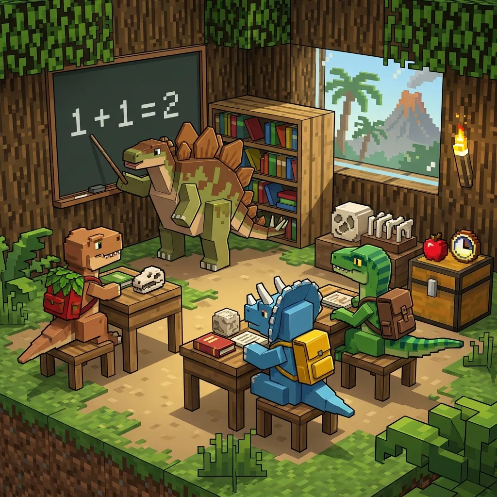
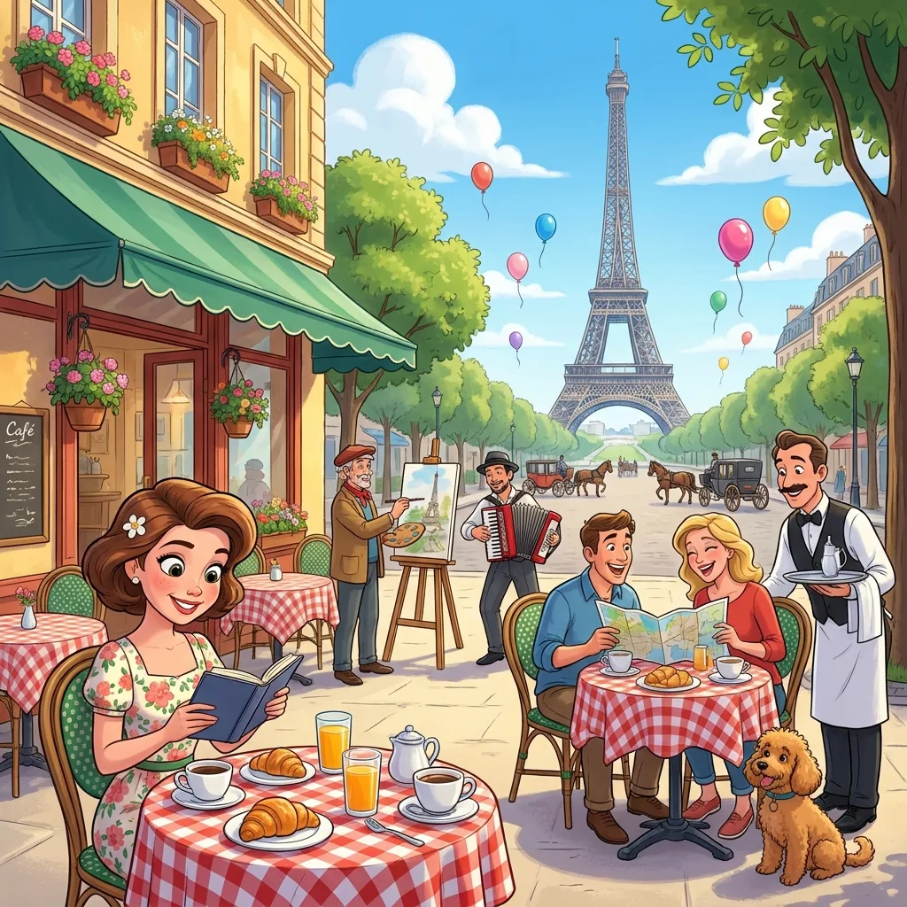

8 ESL Speaking Activities Using Spot-the-Difference Worksheets
Ask any experienced ESL teacher about information-gap activities and spot-the-difference will come up within a minute. The format forces genuine communication: learners must describe, question, and negotiate meaning to complete the task, because each of them is missing information the other has. Here are eight ways to run it, from beginner to advanced.

1. Classic pair barrier game (A1–B1)
Give student A picture A and student B picture B, with a folder standing between them. Without showing their pictures, they must find all the differences by talking. Target language: "In my picture there is / there are…", "Is your … next to the …?", "What color is your…?" This is the gold-standard prepositions-and-descriptions workout.
2. Whole-class warm-up (any level)
Project the puzzle (or tape one to the board), set a two-minute timer, and let the class hunt in teams. First team to find all differences — described in full sentences, not just pointed at — wins. A perfect five-minute lesson opener while you take attendance.
3. Vocabulary pre-teach, then hunt (A1–A2)
Before handing out the puzzle, elicit or teach the objects in the scene: flower, bee, bird, mushroom, watering can… Then the puzzle becomes immediate, meaningful practice of exactly those words. Themed scenes (garden, ocean, space, farm) each carry their own vocabulary set.
4. Past-tense detective (B1+)
Frame picture B as "after": "Somebody changed the garden while the gardener slept! What happened?" Learners report in past tense: "The mushroom disappeared. The tulip turned pink. Someone moved the snail." Add speculation with modals: "The bird must have flown away."
5. Comparatives drill in disguise (A2–B1)
Differences of size are perfect for comparatives and superlatives: "The tree in picture B is bigger than in picture A." Generate puzzles on medium difficulty, which mixes size changes with color changes, and have learners classify each difference: bigger/smaller, appeared/disappeared, changed color, moved.
6. Writing follow-up (B1+)
After the speaking task, students write the "police report": a paragraph documenting every difference found, using sequencing language (first, in addition, finally). Because every pair can have a different puzzle, copying is impossible — a quiet advantage of generated worksheets.
7. Running dictation hybrid (A2+)
Pin picture A on the wall outside the classroom. Runner memorizes part of the scene, returns, and describes it; the writer annotates picture B, marking suspected differences. Swap roles every minute. Chaos, laughter, and a lot of language.
8. One-minute fluency rounds (B2+)
Student A speaks for one full minute describing picture A in as much detail as possible; student B listens, then examines picture B and states the differences from memory of the description. Rotates listening comprehension, note-taking, and fluency under time pressure.
Why generated puzzles beat textbook pages
- Every pair can get a unique puzzle — no answer-sharing between classes, terms, or siblings.
- Difficulty is adjustable — 5 big obvious differences for beginners, 12 subtle ones for exam classes.
- The answer key is automatic, so you're never squinting at two pictures at 7 a.m. wondering what the fifth difference was.
- It's free and unlimited, which matters when you teach six groups a day.

Pick a theme and difficulty; every puzzle has a number so you can reprint or vary it.
Open the free generator